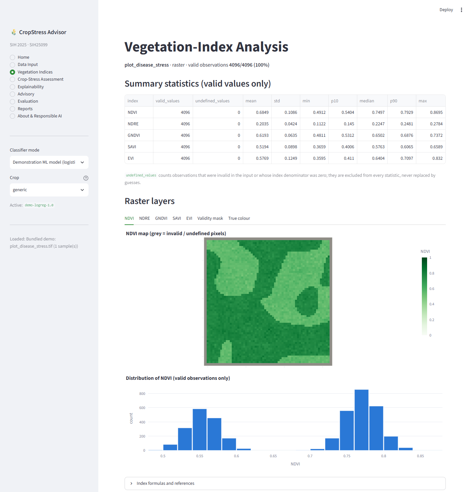

01

AI / Remote Sensing · SIH 2025
Crop-Stress Diagnosis
& Advisory System
A full-pipeline decision-support platform transforming multispectral imagery into 5 vegetation indices, uncertainty-gated AI stress diagnoses, and agronomic field advisories.
Built for Smart India Hackathon 2025 (SIH25099). Features dual-branch PyTorch CNN and logistic regression models, Explainable AI (Grad-CAM canopy heatmaps and linear attributions), uncertainty gating that safely flags ambiguous inputs, and automated report exports in JSON, CSV, and PDF.